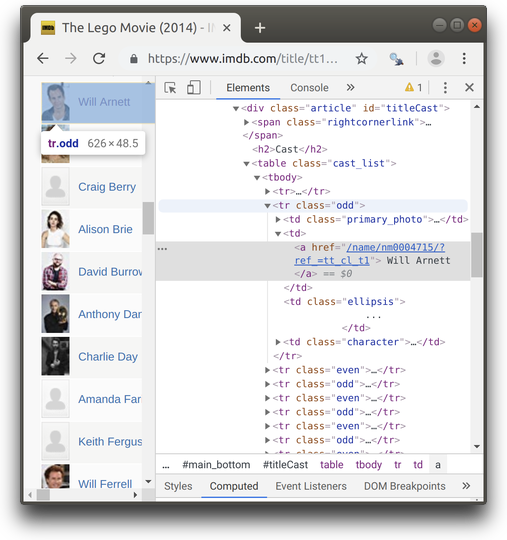
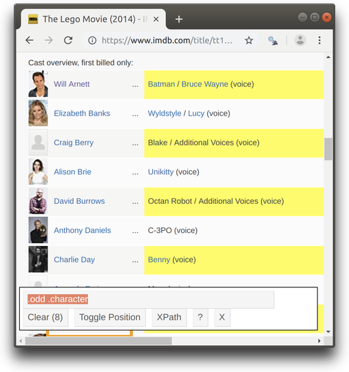
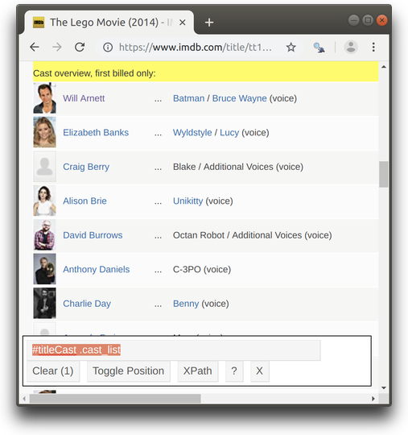
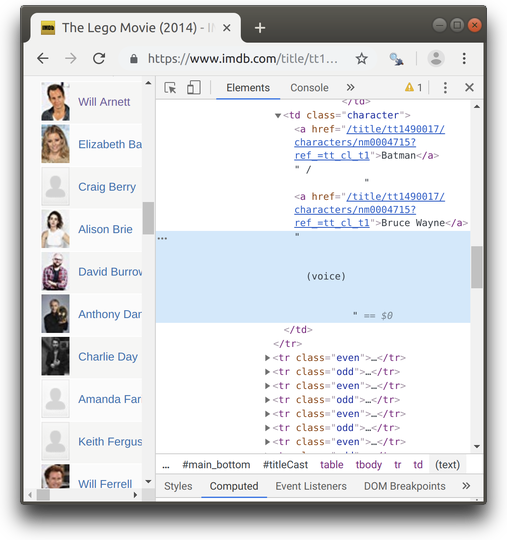

Harvesting the web with rvest
Dmytro Perepolkin
Source:vignettes/harvesting-the-web.Rmd
harvesting-the-web.RmdIntroduction to HTML elements
HTML stand for “Hyper Text Markup Language”. HTML page consists of series of elements which browsers use to interpret how to display the content. HTML tags are names of the elements surrounded by angle brackets like so: <tagname> content goes here... </tagname>. Most HTML tags come in pairs and consist of opening and a closing tag, known as start tag and end tag, where the end tag name is preceded by the forward slash /.
Below is a visualization of a simple HTML page structure:

It is possible to define HTML attributes inside HTML tags. Attributes provide additional information about HTML elements, such as hyperlinks for text, and width and height for images. Attributes are always defined in the start tag and come in name="value" pairs, like so: <a href="https://www.example.com">This is a link</a>
You can learn more about HTML tags and attributes from online resources, such as W3schools
CSS Selectors
CSS is a language that describes how HTML elements should be displayed. One of the ways to define useful shortcuts for selecting HTML elements to style is CSS selectors. CSS selectors represent patterns for locating HTML elements. They can be used not only for styling, but also for extracting the content of these elements. SelectorGadget (see vignette("selectorgadget")) implements a quick way of plucking HTML elements using CSS selectors.
Lets have a look at the IMDB page for the Lego Movie and inspect the content of the page behind the fist entry in the Cast table. You can right-click the element you want to inspect and select Inspect or Inspect Element, depending on your browser.

This will open Developer Tools with the Elements tab containing full HTML content of the page in the tree view, focused on the element you chose to inspect.

Two of very common HTML attributes are class and id. They are used for grouping and identifying HTML tags. In the screenshot above you can find examples of both of them.
The tags containing class attribute can be selected using . followed by the name of the class. For example, you can open SelectorGadget and try selecting tags with classes “odd”(or “even”) like so:

In order to search inside specific tag, selectors can be separated by space. Here, for example, we are locating tags with class “character” inside tags with class “odd” (i.e. we are searching for tags with class “character” among the descendants of tags with class “odd”).

Another useful selector is for tags with a special attribute “id”. Selector for the tags with this attribute can be composed with symbol # prepending the attribute value. This selector can be combined with another one as in the example below.

Other tags can be simply identified by name. SelectorGadget will usually do a fairly good job guessing CSS selector combination, but you can always inspect the page and adjust CSS selector as needed. Here’s more realistic example of CSS selector suggested by SelectorGadget (from vignette("selectogadget")) which might be interpreted as: “Select tag a which is descendant of a tag td immediately following a tag with a class set to .primary_photo”.

The tag with + sign indicates that we are interested not in the one identified by the selector, but the one “immediately following” it. In the example above, the tag containing the actor name does not have the “class” attribute, but it is located between (on the same level with) two other td tags: td tag with class set to primary_photo and td tag with class set to character. Therefore, SelectorGadget suggested the + syntax to locate the exact tag we need.
Overview of other useful CSS selectors can be found online, for example here
Extracting HTML elements with CSS
Once the required section of the HTML document is located, it can be extracted with rvest. Let’s look at the IMDB page for the Lego Movie and extract the names of the characters the actors play.
library(rvest)
#> Loading required package: xml2
lego_url <- "http://www.imdb.com/title/tt1490017/"
html <- read_html(lego_url)
characters <- html_nodes(html, ".cast_list .character")
length(characters)
#> [1] 15
characters[1:2]
#> {xml_nodeset (2)}
#> [1] <td class="character">\n <a href="/title/tt1490017/characters/ ...
#> [2] <td class="character">\n <a href="/title/tt1490017/characters/ ...
html_text(characters, trim=TRUE)
#> [1] "Batman / \n Bruce Wayne \n \n \n (voice)"
#> [2] "Wyldstyle / \n Lucy \n \n \n (voice)"
#> [3] "Blake / \n Additional Voices \n \n \n (voice)"
#> [4] "Unikitty \n \n \n (voice)"
#> [5] "Octan Robot / \n Additional Voices \n \n \n (voice)"
#> [6] "C-3PO \n \n \n (voice)"
#> [7] "Benny \n \n \n (voice)"
#> [8] "Mom \n \n \n (voice)"
#> [9] "Han Solo \n \n \n (voice)"
#> [10] "Lord Business / \n President Business / \n The Man Upstairs \n \n \n (voice)"
#> [11] "Abraham Lincoln \n \n \n (voice) (as Orville Forte)"
#> [12] "Wally \n \n \n (voice)"
#> [13] "Vitruvius \n \n \n (voice)"
#> [14] "Gandalf / \n Additional Voices \n \n \n (voice)"
#> [15] "Green Lantern \n \n \n (voice)"rvest contains a few handy functions for accessing different attributes of the currently selected nodes. For example, we can access names of the selected tags with html_name():
html_nodes(html,".cast_list") %>%
html_name()
#> [1] "table"Most of the time we want to use html_nodes() (returning xml nodeset) to make sure we capture all matches, but in those cases when we know that there is only one single match or when we only care about the first match, we can use html_node(), which returns single xml node.
html_node(html,".cast_list")
#> {html_node}
#> <table class="cast_list">
#> [1] <tr><td colspan="4" class="castlist_label">Cast overview, first billed o ...
#> [2] <tr class="odd">\n<td class="primary_photo">\n<a href="/name/nm0004715/? ...
#> [3] <tr class="even">\n<td class="primary_photo">\n<a href="/name/nm0006969/ ...
#> [4] <tr class="odd">\n<td class="primary_photo">\n<a href="/name/nm1911947/? ...
#> [5] <tr class="even">\n<td class="primary_photo">\n<a href="/name/nm1555340/ ...
#> [6] <tr class="odd">\n<td class="primary_photo">\n<a href="/name/nm0123262/? ...
#> [7] <tr class="even">\n<td class="primary_photo">\n<a href="/name/nm0000355/ ...
#> [8] <tr class="odd">\n<td class="primary_photo">\n<a href="/name/nm0206359/? ...
#> [9] <tr class="even">\n<td class="primary_photo">\n<a href="/name/nm5322950/ ...
#> [10] <tr class="odd">\n<td class="primary_photo">\n<a href="/name/nm1584992/? ...
#> [11] <tr class="even">\n<td class="primary_photo">\n<a href="/name/nm0002071/ ...
#> [12] <tr class="odd">\n<td class="primary_photo">\n<a href="/name/nm0287182/? ...
#> [13] <tr class="even">\n<td class="primary_photo">\n<a href="/name/nm2002649/ ...
#> [14] <tr class="odd">\n<td class="primary_photo">\n<a href="/name/nm0000151/? ...
#> [15] <tr class="even">\n<td class="primary_photo">\n<a href="/name/nm3025399/ ...
#> [16] <tr class="odd">\n<td class="primary_photo">\n<a href="/name/nm1706767/? ...If the name of the current tag is table (both as single xml node, but also as xml nodeset of tables) it can usually be parsed into a data.frame automatically (either as a single data.frame or as a list of data.frames, for xml node and xml nodeset, respectively).
html_node(html,".cast_list") %>%
html_table() %>%
head()
#> X1 X2
#> 1 Cast overview, first billed only: Cast overview, first billed only:
#> 2 Will Arnett
#> 3 Elizabeth Banks
#> 4 Craig Berry
#> 5 Alison Brie
#> 6 David Burrows
#> X3
#> 1 Cast overview, first billed only:
#> 2 ...
#> 3 ...
#> 4 ...
#> 5 ...
#> 6 ...
#> X4
#> 1 Cast overview, first billed only:
#> 2 Batman / \n Bruce Wayne \n \n \n (voice)
#> 3 Wyldstyle / \n Lucy \n \n \n (voice)
#> 4 Blake / \n Additional Voices \n \n \n (voice)
#> 5 Unikitty \n \n \n (voice)
#> 6 Octan Robot / \n Additional Voices \n \n \n (voice)The most basic content in HTML is text. It can be located between the opening and the closing tag of the “tag bracket” (sometimes along with other “descendant” tags). The text (from current and all “children” tags) can be extracted with html_text(). Lets extract text out of the first character node.
html_node(html, ".cast_list .character") %>%
html_text()
#> [1] "\n Batman / \n Bruce Wayne \n \n \n (voice)\n \n \n "Finally attributes of HTML tags can be extracted using html_attrs()(or html_attr() for extracting a single attribute from a node/nodeset, given its name). Let’s fetch urls of the actors’ pages.
html_nodes(html, ".cast_list .character") %>%
html_children() %>%
html_attr("href")
#> [1] "/title/tt1490017/characters/nm0004715?ref_=tt_cl_t1"
#> [2] "/title/tt1490017/characters/nm0004715?ref_=tt_cl_t1"
#> [3] "/title/tt1490017/characters/nm0006969?ref_=tt_cl_t2"
#> [4] "/title/tt1490017/characters/nm0006969?ref_=tt_cl_t2"
#> [5] "/title/tt1490017/characters/nm1555340?ref_=tt_cl_t4"
#> [6] "/title/tt1490017/characters/nm0206359?ref_=tt_cl_t7"
#> [7] "/title/tt1490017/characters/nm0002071?ref_=tt_cl_t10"
#> [8] "/title/tt1490017/characters/nm0002071?ref_=tt_cl_t10"
#> [9] "/title/tt1490017/characters/nm0002071?ref_=tt_cl_t10"
#> [10] "/title/tt1490017/characters/nm0287182?ref_=tt_cl_t11"
#> [11] "/title/tt1490017/characters/nm0000151?ref_=tt_cl_t13"
#> [12] "/title/tt1490017/characters/nm3025399?ref_=tt_cl_t14"
#> [13] "/title/tt1490017/characters/nm3025399?ref_=tt_cl_t14"
#> [14] "/title/tt1490017/characters/nm1706767?ref_=tt_cl_t15"Extracting HTML elements with xpath
Alternative way of extracting HTML elements is using xpath argument in html_node() or html_nodes(), which allows specifying expressions to extract individual nodes or nodesets. XPath (XML Path Language) is a query language for selecting nodes from an XML document. It is much more powerful than CSS selectors, but its syntax is also more terse.
Say we want to extract text from the character column of the Cast table, but only the text without hyperlinks. If we look closer, we will see that the first td node of class character has two children nodes a interleaved with plain text in the following sequence:
- node
acontaining word “Batman” with hyperlink - text “/” (forward slash sign)
- node
acontaining words “Bruce Wayne” with another hyperlink - text “(voice)”

The following rvest code will separate “children” text from “parent” text and return only text from the “child” node(s).
html_node(html, ".cast_list .character") %>%
html_children() %>%
html_text()
#> [1] "Batman" "Bruce Wayne"However, there’s no suitable “CSS selector” to exclude child nodes and extract only text from the “parent” node. This is the situation where xpath selector can be more powerful. In addition to traversing the html/xml tree, xpath also has its own “extractor” functions, similar to those of rvest. In particular, here will will use text() applied to “current node only” (this is the meaning of ./ in the following code). We also use normalize-space() function, which drops empty strings.
Note that the xpath internal function text() has simplified the content, but html_nodes() is unaware of it and still returns xml_nodeset.
html_node(html, ".cast_list .character") %>%
html_nodes(xpath="./text()[normalize-space()]")
#> {xml_nodeset (2)}
#> [1] / \n
#> [2] \n \n \n (voice)\n \n \nWe can now simplify this output and return values in a normal list.
html_node(html, ".cast_list .character") %>%
html_nodes(xpath="./text()[normalize-space()]") %>%
html_text(trim=TRUE)
#> [1] "/" "(voice)"Please, refer to XPath syntax reference here to learn more how to compose and use xpath to locate elements inside HTML tree.